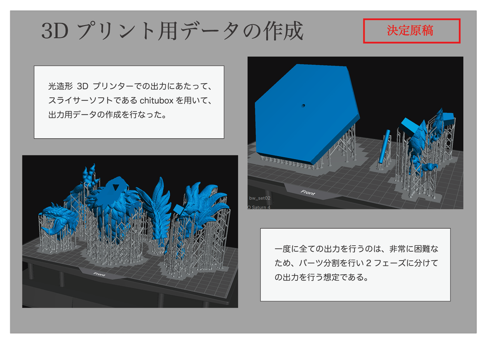

【 - ３Dプリント - 】
光造形3Dプリンターを用いての印刷を行うにあたり、出力用のデータを作成しました。 データ作成は、chituboxというスライサーソフトを用いて行いました。 以下図のように、一度に全てのパーツを出力することは難しいため、2つのフェーズに分けての出力を想定したデータを作成しました。
上記の図のようにプリント用データの作成後、3Dプリンターでの出力を行ないました。 今回はelegooのSaturn4という3Dプリンターを使用し、出力しました。 また、使用したレジンはSK本舗から販売されている水洗いレジンです。 実際の出力した後の様子が以下の図の通りである。（更新中です。続報をお待ちください。）